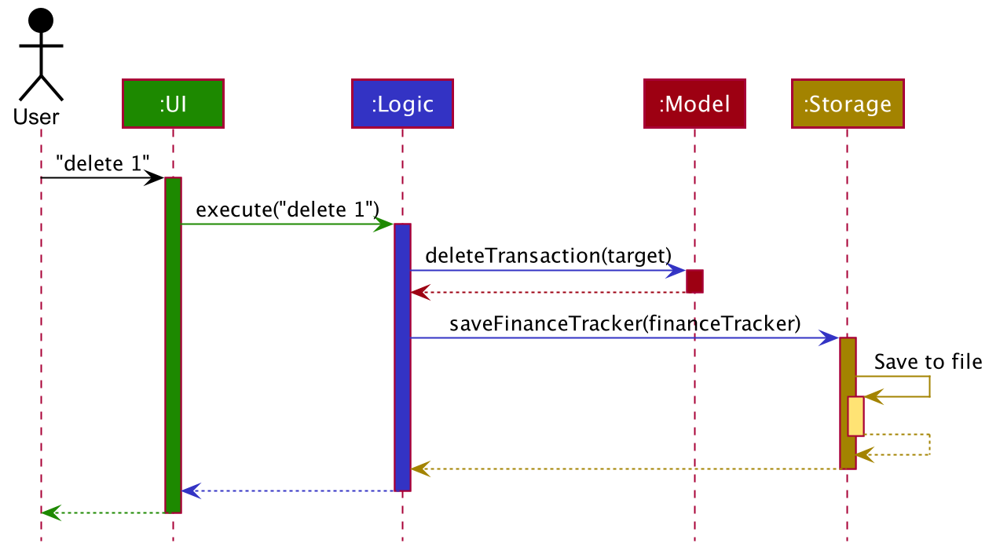

Tutorial: Tracing code
Indeed, the ratio of time spent reading versus writing is well over 10 to 1. We are constantly reading old code as part of the effort to write new code. …[Therefore,] making it easy to read makes it easier to write.
— Robert C. Martin Clean Code: A Handbook of Agile Software Craftsmanship
When trying to understand an unfamiliar code base, one common strategy used is to trace some representative execution path through the code base. One easy way to trace an execution path is to use a debugger to step through the code. In this tutorial, you will be using the IntelliJ IDEA’s debugger to trace the execution path of a specific user command.
Before we start
Before we jump into the code, it is useful to get an idea of the overall structure and the high-level behavior of the application. This is provided in the ‘Architecture’ section of the developer guide. In particular, the architecture diagram (reproduced below), tells us that the App consists of several components.

It also has a sequence diagram (reproduced below) that tells us how a command propagates through the App.

Note how the diagram shows only how the execution flows between the main components. That is, it does not show details of the execution path inside each component. By hiding those details, the diagram succeeds in informing the reader about the overall execution path of a command without overwhelming the reader with too much details. In this tutorial, you aim to find those omitted details so that you get a more in-depth understanding of the code base.
Before we proceed, ensure that you have done the following:
- Read the Architecture section of the DG
- Set up the project in Intellij IDEA
- Learn basic debugging features of Intellij IDEA
Setting a break point
As you know, the first step of debugging is to put in a breakpoint where you want the debugger to pause the execution. For example, if you are trying to understand how the App starts up, you would put a breakpoint in the first statement of the main method. In our case, we would want to begin the tracing at the very point where the App start processing user input (i.e., somewhere in the UI component), and then trace through how the execution proceeds through the UI component. However, the execution path through a GUI is often somewhat obscure due to various event-driven mechanisms used by GUI frameworks, which happens to be the case here too. Therefore, let us put the breakpoint where the UI transfers control to the Logic component. According to the sequence diagram, the UI component yields control to the Logic component through a method named execute. Searching through the code base for execute() yields a promising candidate in seedu.address.ui.CommandBox.CommandExecutor.

A quick look at the class confirms that this is indeed close to what we’re looking for. However, it is just an Interface. Let’s delve further and find the implementation of the interface by using the Find Usages feature in IntelliJ IDEA.

Bingo! MainWindow#executeCommand() seems to be exactly what we’re looking for!
Now let’s set the breakpoint. First, double-click the item to reach the corresponding code. Once there, click on the left gutter to set a breakpoint, as shown below.

Tracing the execution path
Recall from the User Guide that the edit command has the format: edit INDEX [n/NAME] [p/PHONE] [e/EMAIL] [a/ADDRESS] [t/TAG]… For this tutorial we will be issuing the command edit 1 n/Alice Yeoh.
-
To start the debugging session, simply
Run>Debug Main -
Enter
edit 1 n/Alice Yeohinto the command box and pressEnter. -
The Debugger tool window should show up and look something like this:

-
Use the
Show execution pointfeature to jump to the line of code that we stopped at:

-
CommandResult commandResult = logic.execute(commandText);is the line that you end up at. -
We are interested in the
logic.execute(commandText)portion of that line so let’sStep ininto that method call:

-
We end up in
LogicManager#execute(). Let’s take a look at the body of the method and annotate what we can deduce.LogicManager#execute().
@Override public CommandResult execute(String commandText) throws CommandException, ParseException { //Logging, safe to ignore logger.info("----------------[USER COMMAND][" + commandText + "]"); CommandResult commandResult; //Parse user input from String to a Command Command command = addressBookParser.parseCommand(commandText); //Executes the Command and stores the result commandResult = command.execute(model); try { //We can deduce that the previous line of code modifies model in some way // since it's being stored here. storage.saveAddressBook(model.getAddressBook()); } catch (IOException ioe) { throw new CommandException(FILE_OPS_ERROR_MESSAGE + ioe, ioe); } return commandResult; } -
LogicManager#execute()appears to delegate most of the heavy lifting to other components. Let’s take a closer look at each one. -
Step overthe logging code since it is of no interest to us now.
-
Step intothe line where user input in parsed from a String to a Command.AddressBookParser\#parseCommand()public Command parseCommand(String userInput) throws ParseException { ... final String commandWord = matcher.group("commandWord"); final String arguments = matcher.group("arguments"); ... -
Step overuntil you reach theswitchstatement. TheVariableswindow now shows the value of bothcommandWordandarguments:

-
We see that the value of
commandWordis noweditbutargumentsis still not processed in any meaningful way. -
Stepping into the
switch, we obviously stop atAddressBookParser\#parseCommand().... case EditCommand.COMMAND_WORD: return new EditCommandParser().parse(arguments); ... -
Let’s see what
EditCommandParser#parse()does by stepping into it. -
Stepping through the method shows that it calls
ArgumentTokenizer#tokenize()andParserUtil#parseIndex()to obtain the arguments and index required.Tip: Sometimes you might end up stepping into functions that are not of interest. Simplystep outof them! -
The rest of the method seems to exhaustively check for the existence of each possible parameter of the
editcommand and store any possible changes in anEditPersonDescriptor. Recall that we can verify the contents ofeditPersonDesciptorthrough theVariabletool window.

-
Let’s continue stepping through until we return to
LogicManager#execute().The sequence diagram below shows the details of the execution path through the Logic component. Does the execution path you traced in the code so far matches with the diagram?

-
Now let’s see what happens when we call
command#execute()!EditCommand\#execute():@Override public CommandResult execute(Model model) throws CommandException { ... Person personToEdit = lastShownList.get(index.getZeroBased()); Person editedPerson = createEditedPerson(personToEdit, editPersonDescriptor); if (!personToEdit.isSamePerson(editedPerson) && model.hasPerson(editedPerson)) { throw new CommandException(MESSAGE_DUPLICATE_PERSON); } model.setPerson(personToEdit, editedPerson); model.updateFilteredPersonList(PREDICATE_SHOW_ALL_PERSONS); return new CommandResult(String.format(MESSAGE_EDIT_PERSON_SUCCESS, editedPerson)); } -
As suspected,
command#execute()does indeed make changes tomodel. -
We can a closer look at how storage works by repeatedly stepping into the code until we arrive at
JsonAddressBook#saveAddressBook(). -
Again, it appears that the heavy lifting is delegated. Let’s take a look at
JsonSerializableAddressBook’s constructor.JsonSerializableAddressBook\#JsonSerializableAddressBook():/** * Converts a given {@code ReadOnlyAddressBook} into this class for Jackson use. * * @param source future changes to this will not affect the created * {@code JsonSerializableAddressBook}. */ public JsonSerializableAddressBook(ReadOnlyAddressBook source) { persons.addAll( source.getPersonList() .stream() .map(JsonAdaptedPerson::new) .collect(Collectors.toList())); } -
It appears that a
JsonAdaptedPersonis created for eachPersonand then added to theJsonSerializableAddressBook. -
We can continue to step through until we return to
MainWindow#executeCommand(). -
Stepping into
resultDisplay.setFeedbackToUser(commandResult.getFeedbackToUser());, we end up in:ResultDisplay\#setFeedbackToUser()public void setFeedbackToUser(String feedbackToUser) { requireNonNull(feedbackToUser); resultDisplay.setText(feedbackToUser); } -
Finally, we step through until we reach the end of
MainWindow#executeCommand().
Conclusion
In this tutorial, we traced a valid edit command from raw user input to the result being displayed to the user. From this tutorial, you learned more about the inner workings of AddressBook and how the various components mesh together to form one cohesive product.
Here are some quick questions you can try to answer based on your execution path tracing. In some cases, you can do further tracing for the given commands to find exactly what happens.
-
In this tutorial, we traced the “happy path” (i.e., no errors). What do you think will happen if we traced the following commands instead? What exceptions do you think will be thrown(if any), where will the exceptions be thrown and where will they be handled?
-
redit 1 n/Alice Yu -
edit 0 n/Alice Yu -
edit 1 n/Alex Yeoh -
edit 1 -
edit 1 n/アリス ユー -
edit 1 t/one t/two t/three t/one
-
-
What components will you have to modify to perform the following enhancements to the application?
-
Make command words case-insensitive
-
Allow
deleteto remove more than one index at a time -
Save the address book in the CSV format instead
-
Add a new command
-
Add a new field to
Person -
Add a new entity to the address book
-